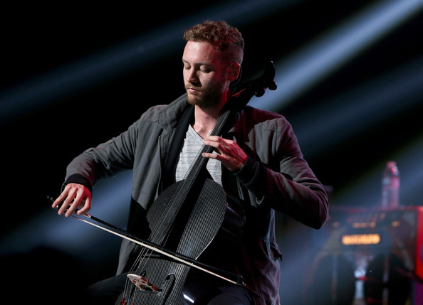

Kytarista, baskytarista, violoncellista. Brent Michael Kutzle se narodil 3. srpna 1985 v Newport Beach v Kalifornii . Když mu bylo třináct, chodil na Sarah McGarvin School, která se nachází v Westminster, Kalifornie. Navštěvoval také La Quinta High School, Baptist University v Riverside a Vanguard Univerzity v Costa Mesa . Hraje baskytaru a na violončelo. Nepůsobil jen ve OneRepublic, zahrál si i s jinými umělci. Mohli jste ho také vidět ve filmu The Eye (hlavní role Jessica Alba). Objevil se v úvodní scéně jako člen orchestru, který hraje na čelo. Můžete ho slyšet hrát i v úvodní písni k filmu Songs Like Rain. Brent se ke skupině OneRepublic přidal v roce 2007. Bylo to tehdy, když je opustil baskytarista, který se začal věnovat solové kariéře. Zvuk čela upravil tak, aby se hodil rockové kapele. Společně s Ryanem a Zachem se podílí na tvorbě některých textů.
